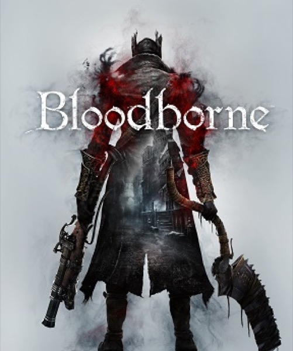

RPG · 2015
Bloodborne
Gothic aggression: dodge instead of block, heal by hitting back.

Cover: Wikipedia: Bloodborne
Facts
- Released
- 2015-03-24
- Genre
- Action RPG
- Category
- RPG
- Platforms
- PlayStation
- Developers
- FromSoftware, Japan Studio
- Publishers
- Sony Interactive Entertainment